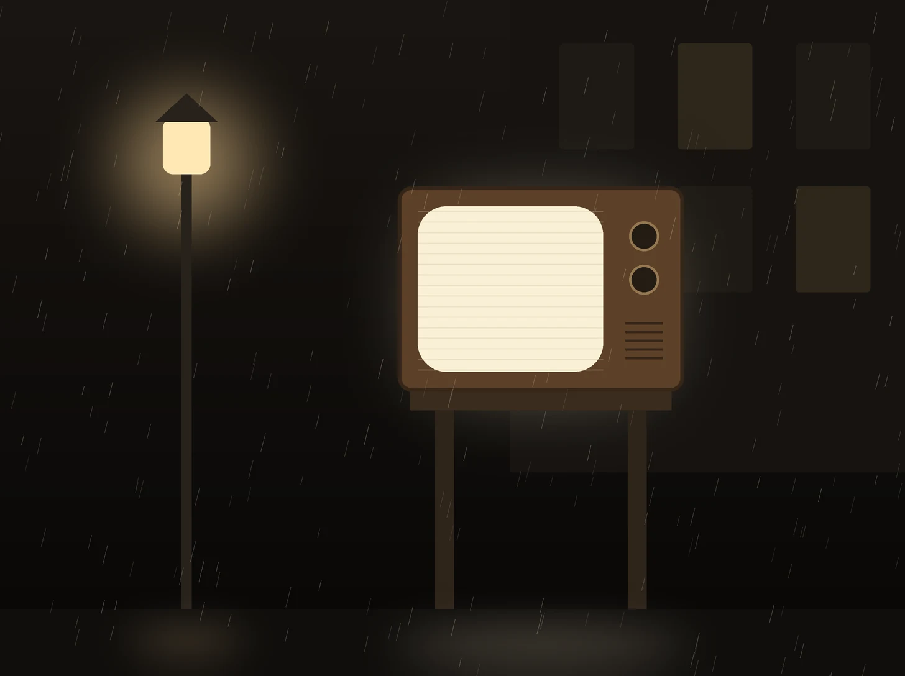
1953TELEVISION
テレビが、街の話題に。
2月1日にNHK、8月28日に日本テレビが本放送を開始。日本テレビは開局に先立ち、街頭テレビを設置しました。
LOTUS JOURNAL
科学・経営・歴史のどこかに、現場の答えが落ちています。
1本 8分。日常のたとえから始めて、イベントの現場に着地します。
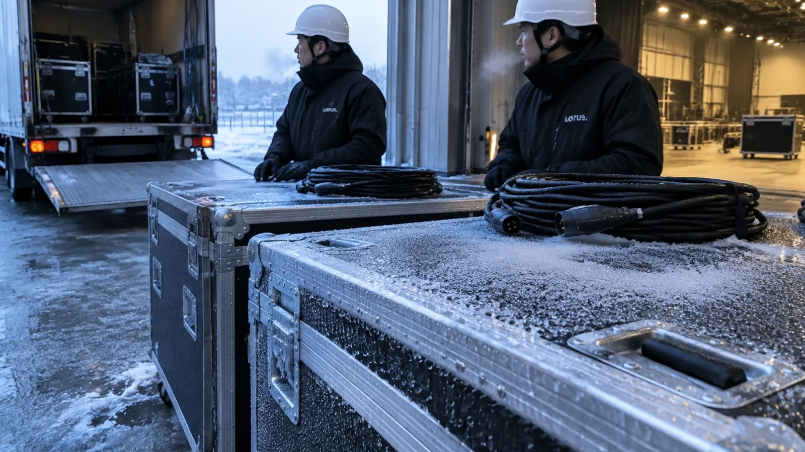
#16 ・ 8分冬の朝、機材に電源を入れてはいけない 11℃ の話冷たいグラスが汗をかく理由と、搬入口の機材は同じ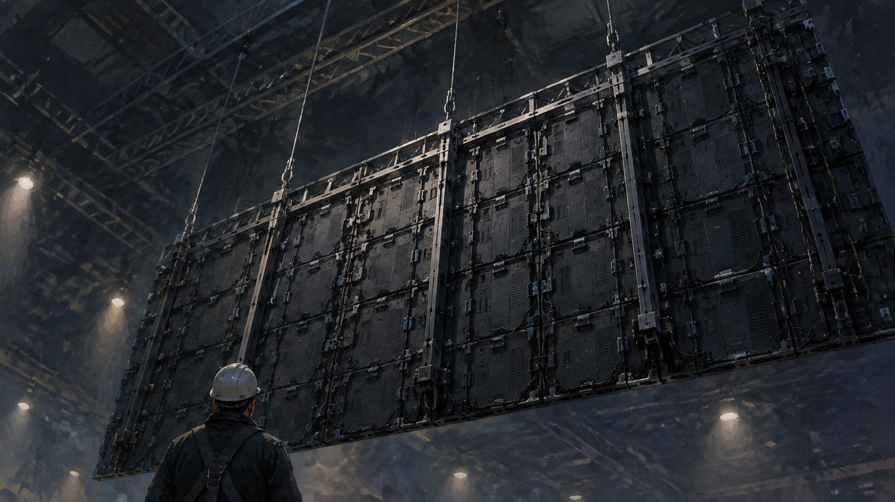
#02 ・ 8分6m×3m の LED の壁。数百 kg の重さは、どこへ行くのかパネルだけでなく、支持する構造と力の流れまで考える#03 ・ 7分人はなぜ、火と画面から目を離せないのか焚き火の実験が教える、スクリーンの置き場所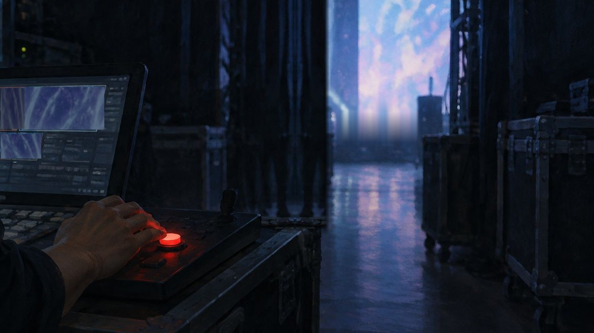
#01 ・ 8分新人でも、ラインを止めていい。トヨタはなぜ、そう決めたのかアンドンと、舞台袖の赤いボタン #07 ・ 8分最高のパイロット 2 人が、同じ一手順を同時に忘れた日1935 年、チェックリストが生まれた理由
#07 ・ 8分最高のパイロット 2 人が、同じ一手順を同時に忘れた日1935 年、チェックリストが生まれた理由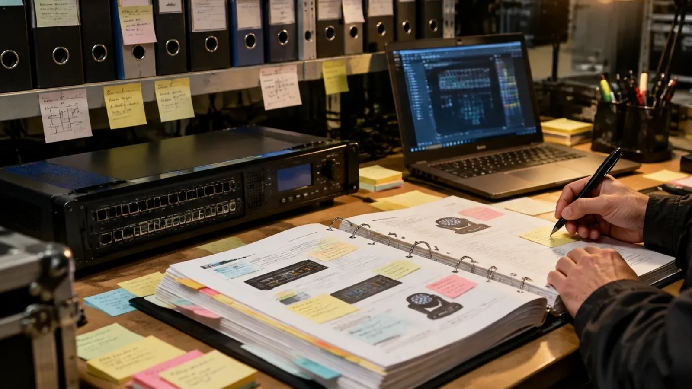
#08 ・ 8分2,000 ページのマニュアルが、なぜ毎月書き換わるのか無印良品の「完成しない」仕組みと、機材の手順書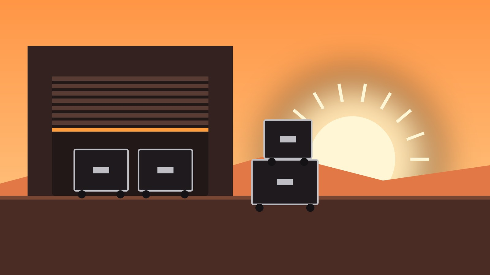
#05 ・ 7分朝 6 時の搬入口で、技術スタッフは何を見ているかLOTUS の 1 日を、時刻で追う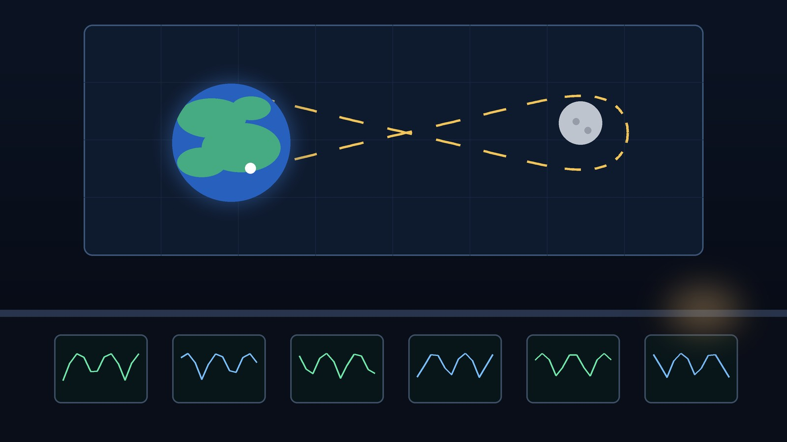
#06 ・ 8分手順書にないことが起きた夜、管制室は何をしたかアポロ 13 号と、現場の判断の順番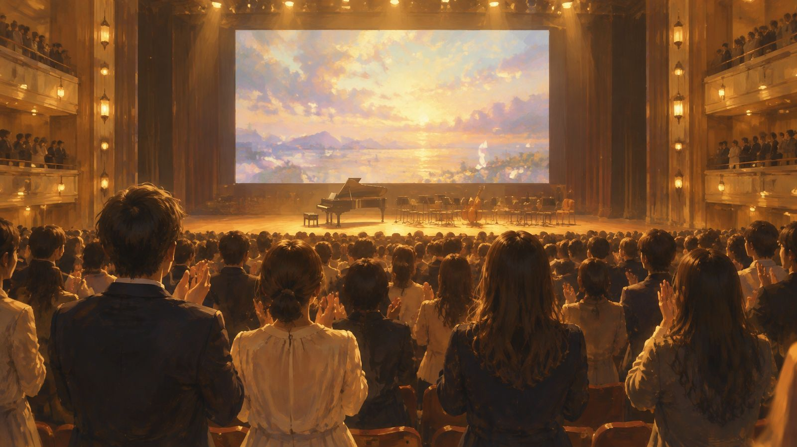
#04 ・ 7分3 時間のイベントを、人は「平均」では覚えていないピーク・エンドの法則と、終わり方の設計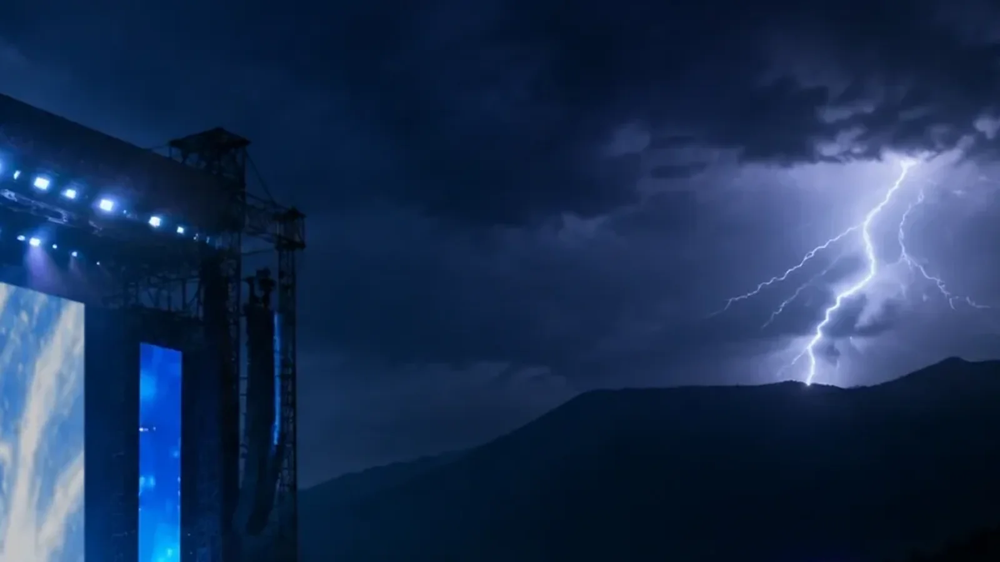
#17 ・ 6分音が遅れるのは許せて、早いのは許せない雷と口パクの、少し不思議な関係#18 ・ 6分絹の波模様と、LEDの縞カメラが LED を撮ると縞が出るわけ#19 ・ 6分帯が流れる画面カメラ越しの LED に横じまが出るわけ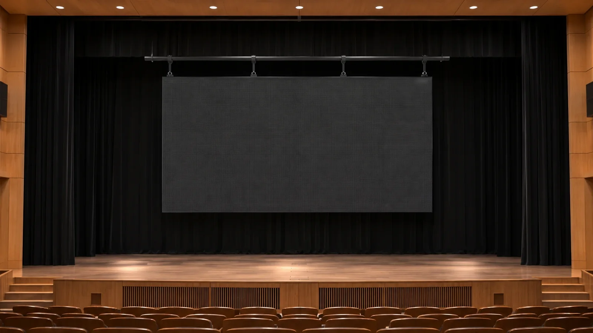
#20 ・ 5分吊るか、積むかLED の画面は、建て方で段取りが変わるREFERENCE
仕様書の言葉を、現場の言葉に直した短い読みものです。迷ったときに開く棚。
 5分会場と配信で、同じ映像を出してはいけないのはなぜか資料を大きく、話す人を映す。二つの画面の役割
5分会場と配信で、同じ映像を出してはいけないのはなぜか資料を大きく、話す人を映す。二つの画面の役割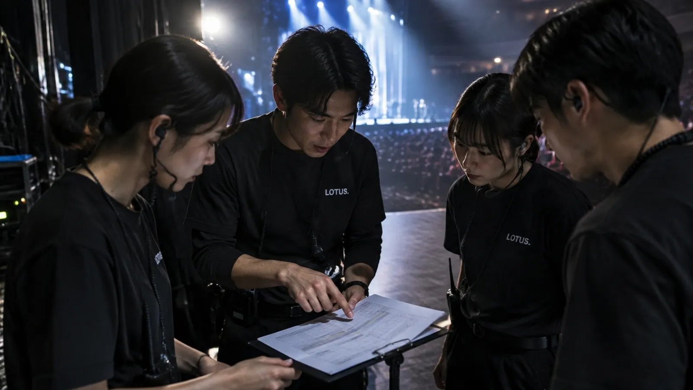
5分本番前に「合図」を合わせないと、何が起きるか人へ、演者へ、機器へ。三つの合図 5分「IP65」の 6 と 5 は、何を守って何を守らないのか雨の日のイベントと、数字の外側
5分「IP65」の 6 と 5 は、何を守って何を守らないのか雨の日のイベントと、数字の外側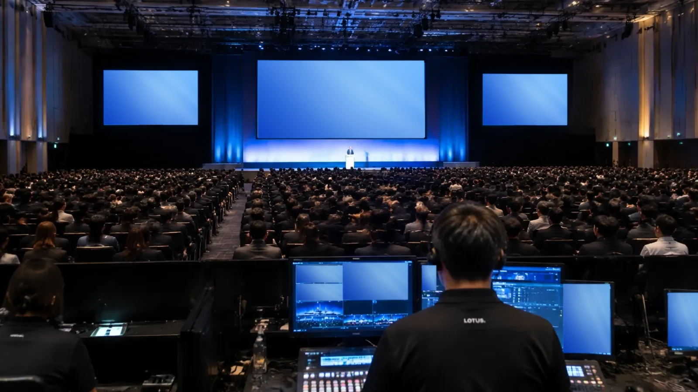
5分会議・報奨・学会・展示で、画面の仕事はどう変わるかMICE の 4 文字から考える5分光ファイバーの「差込口」は、なぜケーブルと別の部品なのか役割、清掃、防水が成り立つ条件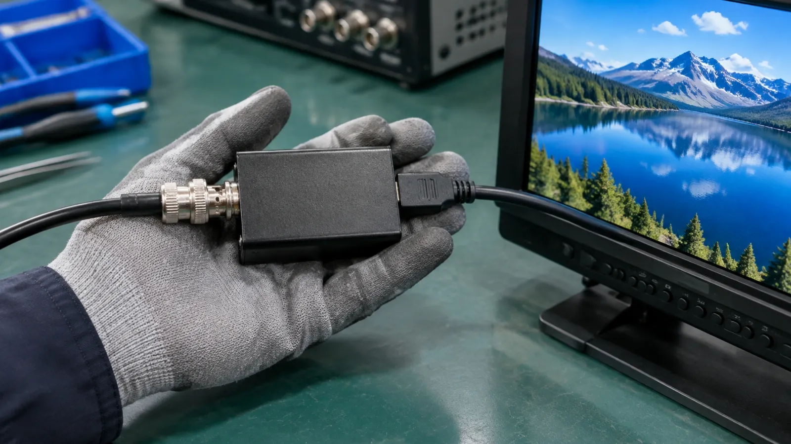
5分SDI の映像を HDMI の画面に出すとき、何が一方通行なのか変換器の向きと、電源と結露の条件 5分カメラの横の 10 型モニターは、誰のための画面か5 系統の入力と、キーロックの理由5分同じ映像を 8 か所へ送るとき、何を変えてはいけないか増やすだけで変えない分配器。緑なら正常
5分カメラの横の 10 型モニターは、誰のための画面か5 系統の入力と、キーロックの理由5分同じ映像を 8 か所へ送るとき、何を変えてはいけないか増やすだけで変えない分配器。緑なら正常 5分光で映像を送るのに、なぜ 3 点そろえる必要があるのか送信機・受信機・ケーブル
5分光で映像を送るのに、なぜ 3 点そろえる必要があるのか送信機・受信機・ケーブル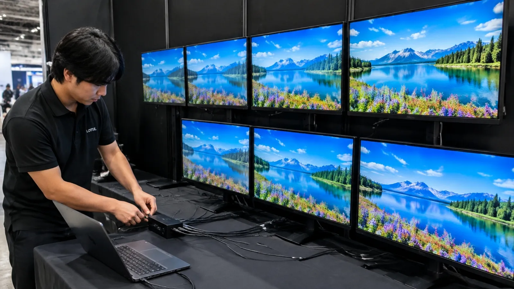
5分PC の映像が 7 つの画面に映らないとき、誰が自己紹介に失敗しているのかEDID という名刺交換 5分「0〜40℃・結露なし」を、冬の搬入でどう読むかなじむまで通電しない。その理由(辞書版)
5分「0〜40℃・結露なし」を、冬の搬入でどう読むかなじむまで通電しない。その理由(辞書版)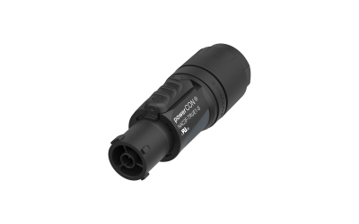
5分青いコネクターと黒いコネクター、通電中に抜いていいのはどちらかpowerCON と TRUE1 の違い 6分カラーバーは、なぜあの順番で並んでいるのか明るさの階段と、黒の下の3本の帯
6分カラーバーは、なぜあの順番で並んでいるのか明るさの階段と、黒の下の3本の帯SHARED MOMENTS
テレビの前で。展示の中で。スタジアムで。
人と映像の接点が広がった、3つの節目をご紹介します。

1953TELEVISION
2月1日にNHK、8月28日に日本テレビが本放送を開始。日本テレビは開局に先立ち、街頭テレビを設置しました。
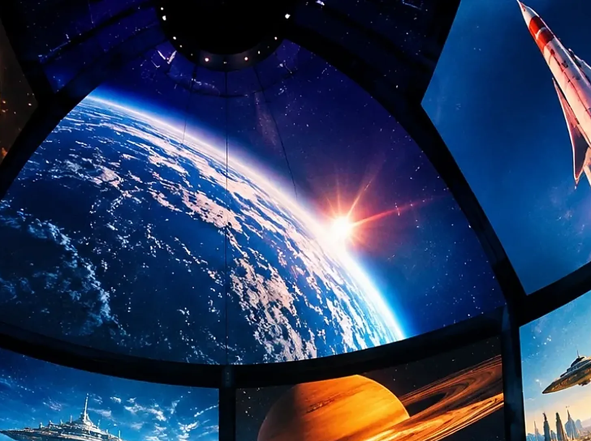
1970EXPO
大阪万博の東芝IHI館では、360度・9面のスクリーンで上映。LEDではなく、映像を投映する仕組みでした。
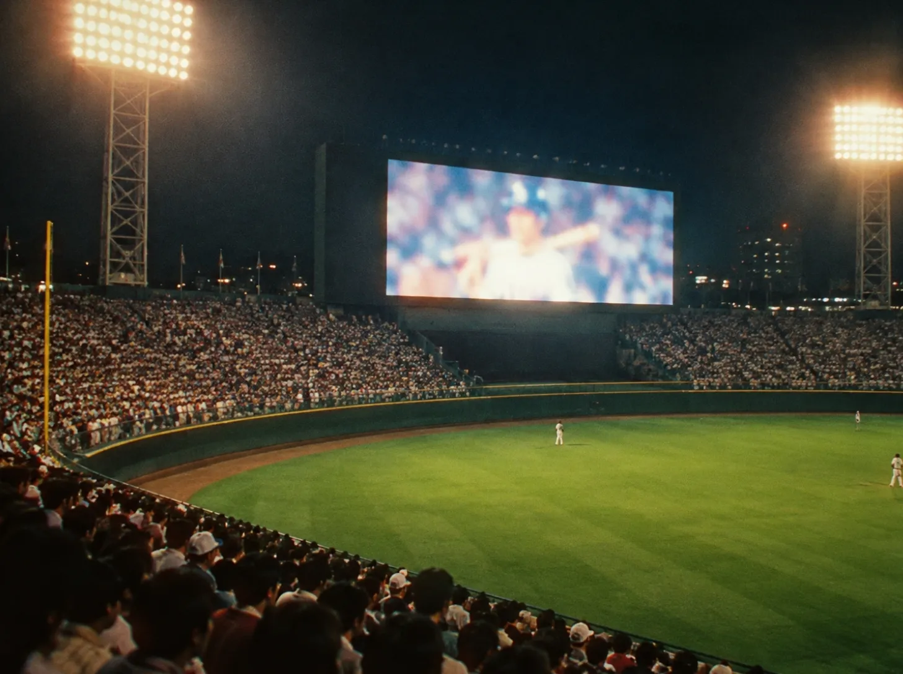
1980LARGE SCREEN
ドジャースタジアムに初期のオーロラビジョンが登場。表示にはCRT（ブラウン管）を使用。大型画面は、初めからLEDだったわけではありません。
BEYOND THE STAGE
企画や運営、会場づくり、機材、興行。
ひとつの催しの周りには、幅広い産業があります。
2025年 日本のイベント産業規模（推計）
3兆1,798億円JACEによるイベント関連・周辺産業の合計。
映画・音楽・スポーツなどを含む数字です。
2023年26,337億円、2024年28,535億円、2025年31,798億円。
出典：JACE「2025年イベント産業規模推計」 ↗（2026年6月16日公表）。経済波及効果を含まない推計です。
2025年は大型イベントが重なった年。過去の伸びが、そのまま未来の成長を約束するわけではありません。
「何を数えた数字か」を知ると、市場の見え方が変わります。
金額と回数は別の指標。1回あたりの規模や料金、調査の対象が変わっても、金額は動きます。開催数・参加人数・売上を分けて見るのがポイントです。
ライブの統計をもっと知る：A.C.P.C. 基礎調査 ↗
MICEは、次の4つの頭文字からなるビジネスイベントの呼び名です。
新しい知識や人に出会う場でもあるMICE。JNTOは、人脈づくりや知識・情報の共有を、開催の意義として紹介しています。
WHAT COMES NEXT?
迫力や規模だけでなく、届き方や参加のしやすさへ。
いまの取り組みをもとに、これからを考える3つの視点です。

現地で一緒に見る体験と、離れた場所から参加する選択肢。目的に合わせて、参加方法を組み合わせる考え方です。

字幕や多言語の案内、見やすい位置。情報を受け取る方法の違いを考えることも、イベントづくりの一部です。

イベントの環境負荷を測ろうとする業界の取り組みも進んでいます。まずは見えるようにすることが、改善を考える入口になります。